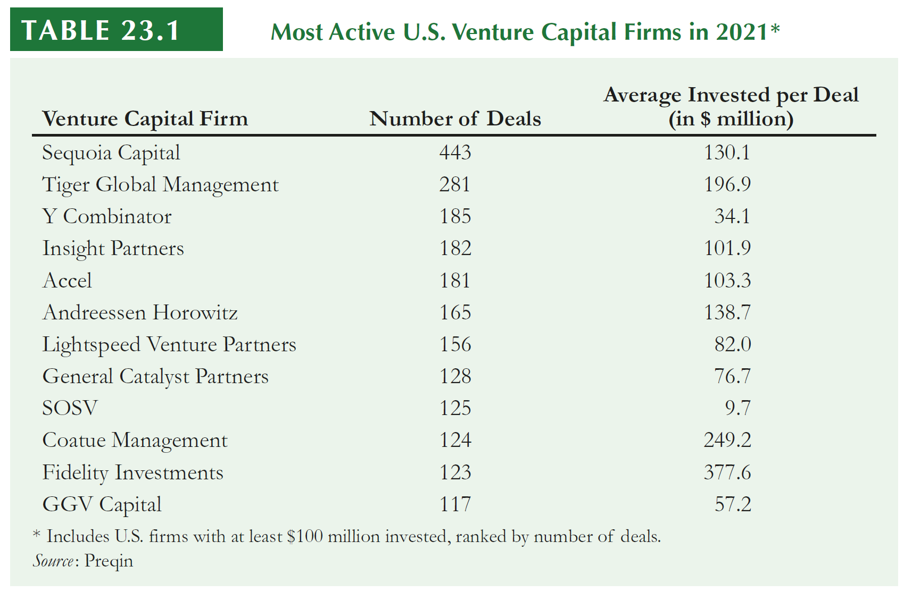
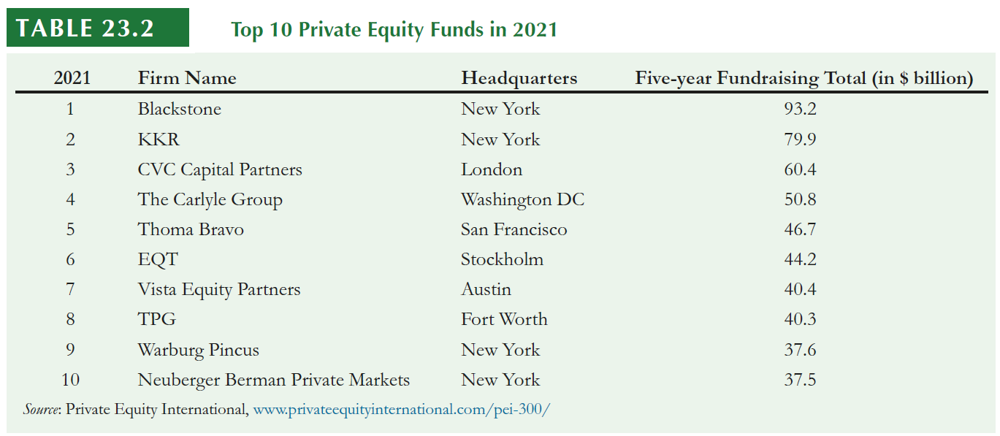
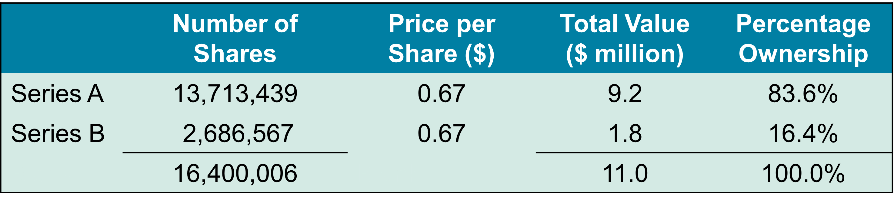
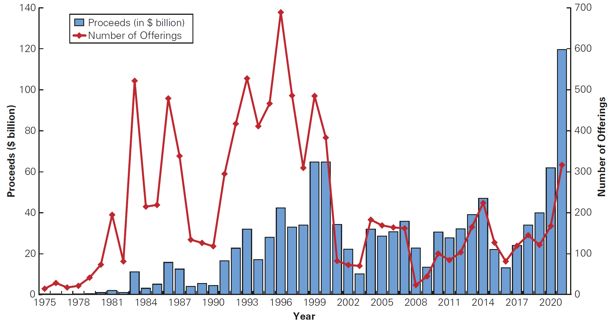
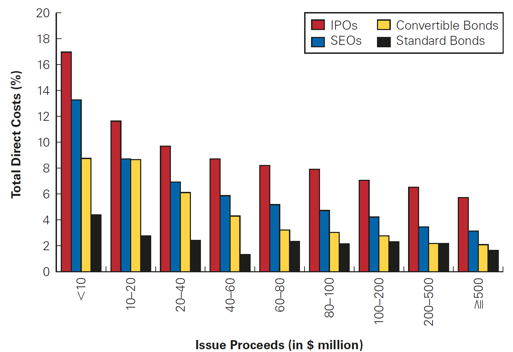

Equity Financing
Outline
This lecture is mainly based the following textbooks:
Study review and practice: I strongly recommend using Prof. Henrique Castro (FGV-EAESP) materials. Below you can find the links to the corresponding exercises related to this lecture:
\(\rightarrow\) For coding replications, whenever applicable, please follow this page or hover on the specific slides with coding chunks.
Equity Financing
Thinking about investment opportunities
Suppose you, as a sole entrepreneur, owns a local shoes retailer and you identify opportunities to expand your business to boost sales
Although you clearly understand the investment opportunity, you run short of resources to fund it. Therefore, as a single entrepreneur, you have little capacity for growth
Furthermore, you may not want to hold a large fraction (or the totality) of your wealth in a single asset
Because of these reasons, moving from a sole entrepreneur to a corporation provides several benefits:
By incorporating, businesses can gain access to capital
Founders can reduce the risk of their portfolios by selling someof their equity and diversifying
Question: how to raise capital for growth?
Raising Equity Financing for Private Companies
Often, a private company must seek outside sources that can provide additional capital for growth. This can be done mainly using three financing sources:
- Equity Financing (using external resources)
- Debt Financing
- Reinvesting retained profits (using internal resources)
Depending on the option chosen, the inclusion of outside capital will affect the control of the company in a different way!
At this point, we’ll focus specifically on Equity Financing
How Equity Financing Takes Place
Definition
Equity Financing is the money that helps firms to grow through equity participation (i.e, acquiring a share of the company). Although the initial capital that is required to start a business is usually provided by the entrepreneur, this source of funding can also come from external investors
There are several ways in which Equity Financing can be done, each with specific characteristics, such the funding amount (in $) and the firms’ stage in the business life cycle
As in (Berk and DeMarzo 2023), the usual types of Equity Financing come from:
- Angel Investors
- Venture Capital
- Private Equity
- Institutional Investors
- Corporate Investors
Angel Investors
Definition
Individual investors who buy equity in small private firms. Angel investors are often rich, successful entrepreneurs themselves who are willing to help new companies get started in exchange for a share of the business.
- The angel investment is usually necessary to kick off the business and the angel market is more well organized these days. It often occurs at such an early stage in the business when it is difficult to assess a value for the firm
- Angel investors often circumvent this uncertainty problem by holding either a convertible note or a SAFE (simple agreement for future equity) rather than equity:
- Angel investors may have a share price discount over new investors
- This allows angels and entrepreneurs to agree on terms without agreeing on a value for the firm, postponing the valuation decision until the firm is more mature and attractive to venture capitalists
Angel Investors, continued
- In general, angel investment comes in place by an individual, and not an entity - click here for a list of famous angel investors
- However, in recent years, there’s the emerging figure of angel groups, groups of angel investors who pool their money and decide as a group which investments to fund
The typical size of an angel investment ranges from several hundred thousand dollars for individual investors to a few million dollars for angel groups
Crowdfunding platforms may also help tunneling angel investments to early-stage startups
- In this format, a firm raises very small amounts of money from a large number of people. Investment levels can be minute, in some cases less than $100
- It is important to keep in mind that crowdfunding has its own specificities and is currently regulated
\(\rightarrow\) Examples: Angelist, Kickstarter
Venture Capital
Definition
A limited partnership that specializes in raising money to invest in the private equity of young firms. One of the general partners who work for and run a venture capital firm.
- Venture Capital firms offer limited partners advantages over investing directly in start-ups themselves as angel investors:
- Limited partners are more diversified
- They also benefit from the expertise of the general partners
- General partners usually charge substantial fees: in general, these funds receive return over the profits the firm make (carried interest) plus a an annual management fee of about 2% of the fund’s committed capital
- Often, they demand greater control over the company’s ownership (e.g., board seats): there is evidence that monitoring these firms pay off (Bernstein, Giroud, and Townsend 2016)
Venture Capital

Private Equity
Definition
Organized very much like a venture capital firm, but it invests in the equity of existing privately held firms rather than start-up companies. Private equity firms also might initiate their investment by finding a publicly traded firm and purchasing the outstanding equity, thereby taking the company private in a transaction called a leveraged buyout (LBO).
- In most cases, the private equity firms use debt as well as equity to finance the purchase
- Private equity firms share the advantages of Venture Capital firms, and also charge similar fees. One key difference between them is the magnitude of the investment:
- The transaction volume in 2021 (the peak of the private equity market) was over $1 trillion (versus $133 billion from Venture Capital)
- The average deal size was over $1 billion (versus $21 million from Venture Capital)
Private Equity

- Examples of Brazilian Private Equity funds: Kinea, Vinci Partners, Opportunity, Pátria, among others
Institutional Investors
Definition
Institutional investors such as mutual funds, pension funds, insurance companies, endowments, and foundations manage large quantities of money. They are major investors in many different types of assets, so, not surprisingly, they are also active investors in private companies.
Institutional investors may invest directly in private firms or they may invest indirectly by becoming limited partners in venture capital firms
Examples include the retirement funds (CalPERS - California Public Employees Retirement System), Previ, among others
These funds are responsible for managing large amounts of money, and are often seen as key players in the corporate governance of a company
Have you ever watched Billions?
More on institutional investors
Some institutional investors are famous for their position on ETF (Exchange Traded funds)
BlackRock, Vanguard, and State Street are the three largest ETF providers had more than 1 trillion dollars in ETF managed funds as of 2024 (see here for a comprehensive list)
Curiosity
While some of these investors are considered active, there could be cases where we can find passive institutional investors. For example, Exchange Traded Funds (ETFs), which are funds that aim to match an index, like the S&P500 or the Ibovespa indices, are generally thought of as passive, because they’ll need to hold a specific portfolio of assets in any situation.
- Institutional Investors are often in the scrutiny of regulatory agencies due to their relevance across many assets and industries
Corporate Investors
Definition
A corporation that invests in private companies.
Many established corporations purchase equity in younger, private companies
- Most of the other types of investors in private firms that we have considered so far are primarily interested in the financial return that they will earn on their investments
- Corporate investors, by contrast, might invest for corporate strategic objectives in addition to the desire for investment returns.
These are also known as a corporate partner, strategic partner, or strategic investor
Examples of Corporate Investors include Google and Intel Capital, which invest in highly specialized companies. Other recent examples include the ramp-up in investment from big-techs into generative-AI startups
How investing takes place
Venture Capital investing
Suppose that you have an investment opportunity and you are seeking for external funding - i.e, you are looking to bringing new shareholders to your company
When a company founder decides to sell equity to outside investors for the first time, it is common practice for private companies to issue preferred stock rather than common stock to raise capital:
- For mature companies, it usually has a preferential dividend and seniority in any liquidation and, sometimes, has special voting rights
- For young companies, it has seniority in any liquidation but typically does not pay regular cash dividends and often contains a right to convert to common stock
Why? If the company goes bad, the preferred stockholders have a senior claim on the assets of the firm relative to any common stockholders (who are often the employees of the firm). If things go well, then these investors will convert their preferred stock and receive all the rights and benefits of common stockholders
Financing Rounds
Each time the firm raises money is referred to as a funding round, and each round will have its own set of securities with special terms and provisions - each called rounds
After a potential initial “seed round”, it is common to name the securities alphabetically, starting with Series A, Series B, and so on
These rounds mount up to the total shares outstanding of the firm
In what follows, we’ll see an example of how different funding rounds interact to generate the final shares outstanding
Example: Real Networks
Real Networks, which was founded by Robert Glaser in 1993, with an investment of approximately 1 million by Glaser
In April 1995, Glaser’s 1 million initial investment represented 13,713,439 shares of Series A preferred stock, implying an initial price of \(\approx\) $0.07 per share
The company’s first round of outside equity funding was a Series B preferred stock. Real Networks sold 2,686,567 shares of Series B preferred stock at $0.67 per share
At the price the new shares were sold for, Glaser’s shares were worth 9.2 million and represented 83.6% of the outstanding shares:

Example: Real Networks, continued
Based on this example, we may want to assess the firm’s value in two distinct periods of time:
- Pre-Money Valuation
- At the issuance of new equity, the value of the firm’s prior shares outstanding at the price in the funding round
- In the Real Netkworks example, 9.2 million
- Post-Money Valuation
- At the issue of new equity, the value of the whole firm (old plus new shares) at the price at which the new equity sold
- In the Real Netkworks example, 11 million
Adding new funding series
- Over the next few years, Real Networks raised three additional rounds of external equity financing in addition to the Series B funding round

- Each of these rounds, along with the shares outstanding prior to the issuance, made the totality of the firm’s outstanding shares!
Exercise: Equity Financing Dynamics
You founded your own firm two years ago. Initially, you contributed 100,000 of your money and, in return, received 1,500,000 shares of stock
Since then, you have sold an additional 500,000 shares to angel investors
You are now considering raising even more capital from a venture capitalist. The venture capitalist has agreed to invest 6 million with a post-money valuation of $10 million for the firm
Assuming that this is the venture capitalist’s first investment in your company, what percentage of the firm will she end up owning? What percentage will you own? What is the value of your shares?
Exercise: Equity Financing Dynamics - Solution
Because the Venture Capitalist will invest 6 million out of the 10 million post-money valuation, her ownership percentage is 60%
Consequently, the pre-money valuation is 10 − 6 = 4 million. As there are 2 million pre-money shares outstanding, this implies a share price of \(\frac{\$4,000,000}{2,000,000}= \small \$2 \text{ per share}\)
Thus, the Venture Capitalist will receive \(\small \frac{\$6,000,000}{\$2}=3\) million shares for her investment, and after this funding round, there will be a total of 5,000,000 shares outstanding.
- You will own \(\frac{1,500,000}{5,000,000} = \small 30\%\) of the firm and the post-transaction valuation of your shares is $3 million.
Venture Capital Financing Terms
We saw that outside investors generally receive preferred stock that is convertible at a later stage. When things go well, these securities will ultimately convert to common stock and so all investors are treated equally. But what happens when they don’t? There are a handful of contract terms that can help mitigating this risk:
Liquidation Preference: specifies a minimum amount that must be paid to these security holders before any payments to common stockholders in the event of a liquidation, sale, or merger of the company
Seniority: investors in later rounds can demand seniority over investors in earlier rounds to ensure that they are repaid first
Anti-Dilution Protection: if things are not going well and the firm raises new funding at a lower price than in a prior round, this protection lowers the price at which early investors can convert their shares to common, increasing their ownership percentage
Board seats: appoint members to secure control rights
Exit strategies
Let’s get back to the Real Networks case. As investors in Series E were willing to pay $8.99 for a share of preferred stock, the valuation of existing preferred stock (earlier rounds) had increased significantly \(\rightarrow\) early investors had substantial capital gains
Because Real Networks was still a private company, however, investors could not liquidate their investment by selling their stock in the public stock markets!
How can investors realize the return from their investment in terms of an exit strategy? This happens mainly through:
Acquisitions: often, large corporations acquire startups by purchasing the outstanding stock of the private company, allowing all investors to cash out their investment and gains
Going public: a firm can also become a public traded company through a Initial Public Offering, allowing shareholders to publicly negotiate their shares
In the next session, we’ll focus on the latter exit strategy
The Initial Public Offering (IPO)
Definition
The process of selling stock to the public for the first time
Why going public? It allows greater liquidity and better access to capital at the cost of more external monitoring and more demand for transparency
Equity offers can be distinguished in terms of:
Primary Offering: new shares available in a public offering that raise new capital
Secondary Offering: shares sold by existing shareholders in an equity offering
\(\rightarrow\) In the former, there is new money on the table; in the latter, money is just “changing hands”!
- An IPO process has important characteristics and agents - let’s dive into some of the key concepts behind this exit strategy
The participants of an IPO - the underwriter
An IPO entails several market agents that are relevant for the offer to be completed
An important piece of this is the Underwriter: an investment banking firm that manages a security issuance and designs its structure
They can work on different schemes according to its exposure:
Best-Efforts Basis: For smaller IPOs, a situation in which the underwriter does not guarantee that the stock will be sold, but instead tries to sell the sock for the best possible price. Often, such deals have an all-or-none clause: either all of the shares are sold on the IPO or the deal is called off.
Firm Commitment: An agreement between an underwriter and an issuing firm in which the underwriter guarantees that it will sell all of the stock at the offer price. Most common.
Auction: A method of selling new issues directly to the public rather than setting a price itself and then allocating shares to buyers, the underwriter in an auction IPO takes bids from investors and then sets the price that clears the market.
The Initial Public Offering - Underwriting participants
Lead Underwriter: The primary investment banking firm responsible for managing a security issuance
Syndicate: A group of underwriters who jointly underwrite and distribute a security issuance
- Underwriters market the IPO and help the company with all the necessary filings
- More importantly, they actively participate in determining the offer price
- In many cases, the underwriter will also commit to making a market in the stock after the issue, thereby guaranteeing that the stock will be liquid
The Initial Public Offering (IPO) - Filings
- Registration Statement
- A legal document that provides financial and other information about a company to investors prior to a security issuance
- Company managers work closely with the underwriters to prepare this registration statement
- Preliminary Prospectus
- Part of the registration statement prepared by a company prior to an IPO that is circulated to investors before the stock is offered
- Final Prospectus
- Part of the final registration statement prepared by a company prior to an IPO that contains all the details of the offering, including the number of shares offered and the offer price
The Initial Public Offering (IPO) - Stages
- Valuation: an assessment of the company’s value done prior to the IPO. This is either done by:
- Estimating the present value of the estimated future cash flows; or
- Examining comparable operations (e.g, recent IPOs) based on characteristics
- Road Show: occurs during an IPO
- Senior management and its underwriters travel around promoting the company and explaining their rationale for an offer price
- Directed towards the underwriters’ largest customers, mainly institutional investors such as mutual funds and pension funds
- Book Building: process made by underwriters during and IPO for coming up with an offer price based on customers’ expressions of interest
- Provides an early indication of the demand for the IPO
- If demand appears to be weak in the target price range, the firm may choose to withdraw from the IPO process
The Initial Public Offering (IPO) - Spread
- If underwriters put effort on making the IPO process to run seamlessly, how they are paid for?
Definition
The spread is the fee a company pays to its underwriters, expressed in a percentage of the issue price of a share of stock.
Consider the final offer price is $12.50 per share. If the company paid the underwriters a spread of $0.875 per share, or exactly 7% of the issue price, the underwriters bought the stock for $11.625 per share and then resold it to their customers for $12.50 per share
When an underwriter provides a firm commitment, it is potentially exposing itself to the risk that the banking firm might have to sell the shares at less than the offer price and take a loss
\(\rightarrow\) Research shows that about 75% of IPOs experience an increase in share price on the first day (only 9% experience a decrease)
The Initial Public (IPO) Offering - additional terms and conditions
Over-allotment allocation (greenshoe provision): In an IPO, an option that allows the underwriter to issue more stock, usually amounting to some % of the original offer size, at the IPO offer price
Lockup: A restriction that prevents existing shareholders from selling their shares for some period, usually 180 days, after an IPO
\(\rightarrow\) Specific terms and conditions can be found in the IPO filings (Preliminary/Final Prospectus) outlining all the rules that the specific IPO will folow
Exercise - The Initial Public Offering (IPO)
- RAX House is a private company considering going public. It has assets of 585 million and liabilities of 415 million. The firm’s cash flow from operations was 137 million for the previous year. After the IPO, RAX House will have 118 million shares outstanding
- The industry average cash flow per share multiple is 3.0, and the average book value per share is 2.3. Based on these multiples, estimate the IPO price.
Solution
RAX House’s book value of equity is \(\small 585 - 415 = 170\) million. With 118 million shares outstanding, the book value per share is \(\frac{170}{118} = \small 1.44\) per share. Given the industry average of 2.3, the estimated IPO price would be \(\small 1.44 \times 2.3 = \small \$3.31\)
The firm’s cash flow from operations was 137 million, thus cash flow per share is \(\frac{137}{118} =\small 1.16\). Given the industry average multiple of 3.0, the estimated IPO price would be \(\small 1.16 \times 3.0 = \$3.48\)
IPO Puzzles
IPO Puzzles
Research conducted using historical IPOs show some important stylized facts
On average, IPOs appear to be underpriced: The price at the end of trading on the first day is often substantially higher than the IPO price
The number of issues is highly cyclical: When times are good, the market is flooded with new issues; when times are bad, the number of issues dries up
The costs of an IPO are very high, and it is unclear why firms willingly incur them
The long-run performance of a newly public company (three to five years from the date of issue) is poor. That is, on average, a three-to five-year buy and hold strategy appears to be a bad investment
In what follows, we’ll discuss each of these puzzles
IPO Puzzles - Underpricing
- Research has found that about 75% of first-day returns are positive: the average first-day return in the United States is 17%
- The underwriters benefit from the under pricing because it allows them to manage their risk:
- If the stock is underpriced and there’s market correction upwards \(\rightarrow\) stock goes up, there’s positive momentum on the market, and the underwriter may sell shares at profit
- If the stock is overvalued and the firm has some level of commitment, it might incur in a loss if stock prices go down in the first trading day
- Consequently, underwriters set the issue price so that the average first-day return is positive:
- Who bears the cost of underpricing? The pre-IPO shareholders!
- Why? In effect, these owners are selling stock in their firm for less than they could get in the aftermarket!
IPO Puzzles - Underpricing (continued)
- Although IPO returns are attractive, not all investors can earn these returns:
- When an IPO goes well, the demand for the stock exceeds the supply. Thus the allocation of shares for each investor is rationed (goes down) \(\rightarrow\) you get only a fraction of the shares you requested
- When an IPO goes bad, demand at the issue price is weak, so all initial orders are filled completely
\(\rightarrow\) The typical investor will have their investment in good IPOs rationed while fully investing in bad IPOs - this is also known as the “winners curse”
Definition
Winner’s Curse: refers to a situation in when the high bidder, by virtue of being the high bidder, has likely overestimated the value of the item being bid on. You “win” (get all the shares you requested) when demand for the shares by others is low and the IPO is more likely to perform poorly.
IPO Puzzles - Cyclicality and Recent Trends
- The number of issues is highly cyclical:
- When times are good, the market is flooded with new issues
- When times are bad the number of issues dries up

IPO Puzzles - Costs of an IPO
A typical spread is roughly 7% of the issue price, which is by most standards large, especially considering the additional cost to the firm associated with underpricing
Why? One possible explanation is that by charging lower fees, an underwriter may risk signaling that it is not the same quality as its higher priced competitors

IPO Puzzles - Long-Run Underperformance
Although shares of IPOs generally perform very well immediately following the public offering, it has been shown that newly listed firms subsequently appear to perform relatively poorly over the following three to five years after their IPOs
An important note is that underperformance is not unique to an initial public issuance of equity:
- Underperformance is also found in subsequent issuances as well (“seasoned offerings”)
- This raises the possibility that this phenomenum might not result from the issue of equity itself, but rather from the conditions that motivated the equity issuance in the first place
Recent studies also cast doubt on the interpretation of this long-run underperformance: is it really due to the IPO, or is the underperformance relative to the characteristics of the firm that has chosen to go public?
The Seasoned Equity Offering (SEO)
Definition
When a public company offers new shares for sale - also known as follow-on offer in Brazil.
Public firms use SEOs to raise additional equity
When a firm issues stock using a SEO, it follows many of the same steps as for an IPO
The main difference is that a market price for the stock already exists, so the price-setting process is not necessary anymore
There are two types of seasoned equity offerings:
- A Cash Offer is a type of SEO in which a firm offers the new shares to investors at large.
- On the other hand, a Rights Offer is a type of SEO in which a firm offers the new shares only to existing shareholders
It is important to note that Rights Offers protect existing shareholders from underpricing!
Rights Offer and Underpricing
Suppose a firm holds 100 in cash and has 50 shares out. Each share is worth $2.
Option 1: it announces a cash offer for 50 shares at $1 per share
- Once this offer is complete, the company will have 150 in cash and 100 shares outstanding
- The price per share is now $1.50
- The new shareholders therefore receive a $0.50 benefit at the expense of the old shareholders
Option 2: it announces a rights offer, where shareholders have the right to purchase an additional share for $1
- If all shareholders chose to exercise their rights, then after the sale, the value of the firm is 150 with 100 shares outstanding and a price of 1.50 per share
- In this case, however, the $0.50 benefit accrues to existing shareholders, which exactly offsets the drop in the stock price
- The firm can continue to issue equity without imposing a loss on its current shareholders!
The Seasoned Equity Offering (SEO) price reaction
- Researchers have found that, on average, the market greets the news of an SEO with a price decline. This is consistent with an Adverse Selection argument:
- A company concerned about protecting its existing shareholders will tend to sell only at a price that correctly values or overvalues the firm, investors infer from the decision to sell that the company is likely to be overvalued
- As a consequence, the price drops with the announcement of the SEO
- Although not as costly as IPOs, seasoned offerings are still expensive. Underwriting fees amount to 5% of the proceeds of the issue - rights offers have lower costs than cash offers
SPACs: a new way to go public
In recent years, an alternative process by which a private company can initially raise capital in public markets gained traction, called Special Purpose Acquisition Company (or SPAC)
A SPAC is a shell company created solely for the purpose of finding a target private firm and taking it public by merging it with the SPAC
After the merger transaction, referred to as a deSPAC, the SPAC shell company is renamed to match the target
The result is that the target receives cash from the SPAC and has shares that are publicly traded. In other words, the outcome for the target is the same as an IPO, but without the SEC’s rigorous listing requirements or the long IPO sales process!
\(\rightarrow\) Lower requirements are not always desirable: see here the fraudulent case of the electic vehicle startup Nikola involved in a SPAC merger
Practice
- Take a look at an example of an IPO Prospectus for Raízen S.A, made in 2021 by a syndicated group of underwriters, where BTG Pactual was the lead underwriter - access on eClass®
Important
Practice using the following links: